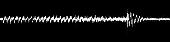
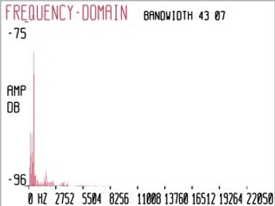
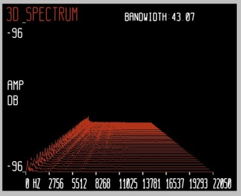
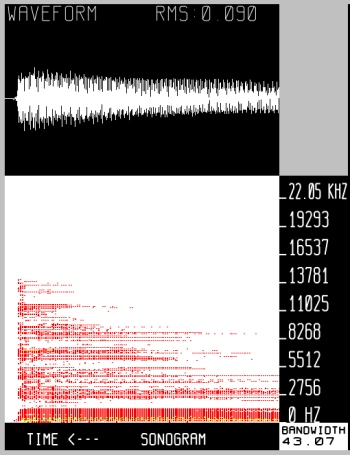
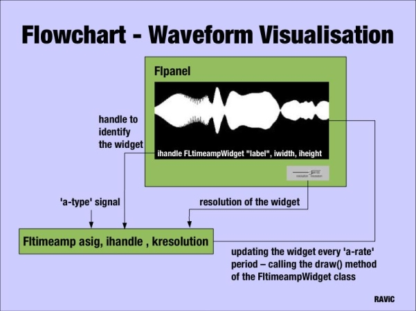
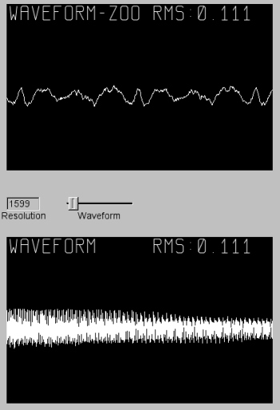
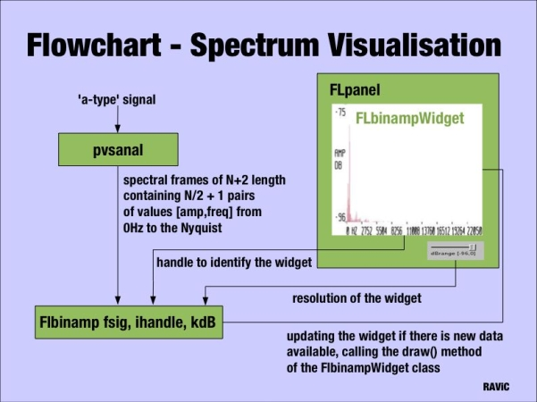
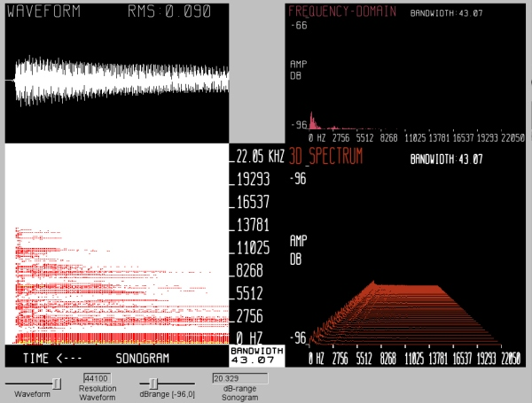

Introduction
Csound has been in existence for more than 20 years. Due to the fact that Csound is a text- based language the core Csound doesn't provide a Graphical User Interface. Graphics were first introduced to Csound with the displaying of function tables, followed by the graphic opcodes allowing the controlling of parameters of Csound instruments. Todays graphical frontends like CsoundVST provide means to manage the entire work cycle (edit, compile and run/audition) from one frontend. When experimenting with the audio visualisation tool sndpeek, I was impressed by the ability to display frequency-domain representations of audio signals. After some research I found out that the feature to visualise the spectra and waveforms of audio signals is something missing in the Csound language. I set out to build opcodes that would extend Csound with the inclusion of real-time frequency and time-domain visualisation of audio signals. This article will give a short introduction to the visualisation of audio signals and will discuss the development of the RAViC opcodes. The author hopes that this article will be interesting to readers from different backgrounds, as the opcodes target different users as well.
I. Background
The goal of the project is to visualise the spectra and waveforms
of audio signals. The waveform is a pattern of sound pressure
variation, usually displayed as a two-dimensional graph of pressure or
amplitude against time. The following graph shows a complex waveform
(constructed from sine waves of various frequencies, amplitudes and
phases) characterised by its constantly varying amplitude.

The display above gives us information about the pressure variation of the sound over the time but contains no information about its frequency content. Another important property of sound is the frequency. A complex waveform consists of multiple sinusoids with different amplitudes, frequencies and phases. Data to represent the time varying spectra can be provided by different analysis methods. The spectrum of a sound is displayed as a graphic representation of amplitude against frequency. The graph below shows the spectrum of a vowel sound, which gives us information about the frequency content of the sound at a certain time. We can analyse the spectrum of a sound to understand its behaviour in the frequency domain, as opposed to analyse the waveform to learn about its behaviour in the time domain.

To display the time variation of the spectrum three-dimensional displays can be used. The x-axis represents frequency, the y-axis the amplitude and the z-axis the corresponding time. A three-dimensional representation gives us information about the amplitude envelope of each frequency bin of the complex sound. The sound used to display the 3D representation below comes from a harpsichord playing a C2. We can see the wide distribution of the frequencies over the spectrum.

A similar approach for the visualisation of three magnitudes is a sonogram which displays an audio signal as a two dimensional display of time versus frequency+amplitude. The x-axis represents the time dimension and the frequency is displayed on a linear scale on the y-axis. The amplitude is represented by colours of different tones. In the graph below we can see the sonogram of a decaying signal. The diminishing sound is represented in the decaying of the components in the spectral domain and the diminishing waveform in the time-domain. The frequency dependent loss of energy can be seen. The higher frequencies decay more rapidly than the lower frequencies. The vertical axis depicts frequency (higher frequencies are higher up in the diagram) and different colours indicate the amplitude, darker tones indicating greater intensity. The tones chosen are analogous to the spectrum of visible light, where the possible extremes at either end are represented through violet light, indicating greater intensities (shorter wavelengths) and red light referring to longer wavelengths. On the top of the plot the waveform of the signal is displayed.

II. Requirements
In RAViC the four types of visualisation, that were discussed in the
preceding section, have been implemented. After a first imagination of
how the end result could look like the requirements for such a system
had to be defined. The basic part of this software will be a window to
display the representation. As Csound is cross-platform, the graphical
user interface should be cross-platform as well. Another important
requirement is the need for user interaction (i.e. example "freezing"
the display) during the performance. Another issue is to find a
graphic library to display the graph. The library must be able to
construct a scene in two and three dimensions, must be compatible with
the window system and cross-platform. Another strong requirement is
the need for a real time analysis method for the time varying
spectrum. To be able to display the frequency-domain presentation of a
sound we need information about its frequency content. The application
further requires access to real-time audio data.
III. Implementation
Before implementing RAViC, I settled on the following basic decisions:
- FLTK: window management system, -->
- OpenGL: graphics library -->
- Plugin Opcodes: Csound provides the real-time audio data (audio files, synthesised audio) -->
- PVS-Opcodes: provides the real-time spectral analysis data -->
FLTK
The window to display the representation is created by the C++ GUI- Toolkit FLTK. The choice to use FLTK was influenced by the fact that it is already used to create windows (panels) and widgets (i.e. valuators) in Csound. The visualisation opcodes are highly compatible with the FLTK widgets and can be grouped and arranged as desired within the window. The window management system is cross-platform and can handle interactions by the mouse or keyboard, which can, for example, trigger the freezing of the display during the performance.OpenGL
The scene is constructed with the 3D graphics library OpenGL, which is used in FLTK to enhance the possibilities of 3D Graphics. OpenGL is a general graphics programming package which "provides a library of graphics functions that can be used in a programming language such as C, C++, Java or Fortran" (Baker, 2004). The functions are used to describe the objects for a scene, to apply transformations to the objects, to set the colours of the objects and the scene, and to define view points and projections. There exist two types of objects in OpenGL, geometric objects which are defined by vertices and images defined by their pixels. The functions to create objects, also called graphics output primitives, are: points, line segments, circles or polygons. The final image in the frame buffer is defined by pixels and is achieved by performing several processing steps like transformations, lightning, colouring and generating texture coordinates. The OpenGL processing pipeline can be described as rendering two-and-three-dimensional objects into a frame buffer (The Blue Book, 1992). OpenGL is an widely adopted graphics standard which makes code highly portable. An interesting aspect of using OpenGL is that, as a software interface to graphics hardware, OpenGL provides 3D hardware acceleration (direct hardware rendering) which can be used to achieve good performances. The display window can not be created directly with the basic OpenGL functions since the OpenGL Core library contains only device-independent graphic functions. The window-management operations depend on the computer used. For the visualisation opcodes FLTK is used to create the platform independent windows. To make an OpenGL display we have to subclass Fl_Gl_Window. The subclass must contain:- a class definition (constructor for the appearance of the window, buffer memory allocation)
- a draw() method in which the OpenGL calls are made
- a handle() method to deal with user input
glBegin(GL_LINE_STRIP);
for(x=buffersize-1; x>0; )
{
glVertex2f(x-=(GLint)zoom, pbuffer[rp]);
rp = (rp!=0 ? rp-1 : buffersize-1);
}
glEnd();
The buffer is drawn starting at the right side of the window. The variable zoom determines the resolution of the waveform display. Besides the functions to define the objects the draw() method contains the view port information, the colour for the objects and for the background.
Plugin Opcodes
To achieve the maximum of modularity the representations are built as opcodes, able to display any audio signal created in any Csound instrument. With the redesign of the "User Defined Libraries" in Csound5 the providing of new opcodes either as open source or as compiled libraries has been facilitated. The so called "plugin-opcodes" can be written in C or C++ and are dynamically linked to the Csound executable. The advantage of this method, compared to the method of the "builtin unit generators" where the code is statically linked to the executable, is that plugins created by any developer at any time can be used with already existing versions of Csound. At the moment each representation module is built as an plugin-opcode, but can be grouped into one library to facilitate the distribution. The primary goal of using opcodes for the visualisation is to be able to display any audio signal created in any Csound instrument. The picture below shows the flowchart for the time-domain representation. Each representation has got a ''display opcode'' and a ''processing opcode''. Latter is processing the audio frames and invokes the draw() method. In the case of a time-domain signal this occurs at a-rate. The ''display opcode'' is called at 'i-rate' because the initialisation of the display (appearance of the window, buffer memory allocation) only needs to be done once. This is the reason why FLTK opcodes are normally placed outside the instrument in the header of the orchestra file. The display widget is identified by a handle at initialisation.
Below is the corresponding Csound instrument for such a flowchart. An FLTK window (FLpanel) is created containing the opengl-widget (FLtimeampWidget), a slider (FLslider) to control the resolutions of the drawing, and FLsetValue to initialise the values of the slider. To fit into the panel the width and height values of the opengl-widget must be smaller than those of the surrounding window. The x and y values (in this example both are 10) determine the distance to the edge of the window. The value of the slider is initialised with the sampling rate. The boundaries are the sampling rate, the resolution of one second, and latter divided by 1000 to be able to "zoom" into the waveform. At the top of the widgets the name of the graph is displayed. The colour of the graph and the characters are given as three arguments describing the RGB colours. The opcode features the calculation of the root-mean-square amplitude which is drawn at the right top.
sr = 44100 kr = 44100 ksmps = 1 nchnls = 1 FLpanel "Real-Time Audio Visualisation", 500, 350, 250, 200 gidispres FLvalue "Resolution", 50, 20, 10, 300 gihandle FLtimeampWidget "WAVEFORM", 400, 250, 10, 10, 1.0, 1.0, 1.0 , 0, 1, 2 gkres, gires FLslider "Waveform", sr/1000, sr, 0, 5, gidispres, 100, 20, 100, 300 FLsetVal_i sr, gires FLpanelEnd FLrun instr 1 asig diskin2 "whale.wav", 1 ,0, 1, 0, 32 FLtimeamp asig, gihandle, gkres out asig endin i1 0 360 //display is up for 6 minutes
The display below shows the zoom into a complex waveform. The graph at the top displays a smaller selection of the waveform which was regulated by the slider during the performance.

Phase Vocoder Streaming Opcodes
The real-time analysis data to display the frequency-domain representation of the audio signals is provided by the PVS opcodes introduced by Richard Dobson. The framework introduces a new frequency-domain signal type "fsig" which enables the separation between the analysis and resynthesis stages of the Phase Vocoder. The representation of the spectrum can be referred as the resynthesis stage and we can use pvsanal to perform the analysis. pvsanal generates a "fsig" type signal from a mono audio source, using Phase Vocoder overlap-add analysis. Fsig hold frames of DFT-based spectral analysis data. Each frame contains amplitude and frequency information for N analysis bins. This data is used to display the frequency-domain representation of the audio signals. In the flowchart below we can see the main implementation differences for the frequency-domain opcodes. The spectral representation opcodes has a 'f-type' signal as input and the processing function is registered at k-rate. Because analysis frames are not available every 'k-rate' period, a variable keeps track of the frames already processed. The resolution of the amplitude of the bins is scalable which can help to make a graph more readable if a low signal is analysed.
The Csound instrument below was used to display the sonogram in the section ''Background'' of this article. The panel widget encapsulates two widgets, one for the time-domain representation and one for the time by frequency+amplitude representation where the amplitude is represented by colours of different tones.
sr = 44100 kr=44100 ksmps = 1 nchnls = 2 FLpanel "FLtimebin", 550, 650, 150, 100 gihandle2 FLtimeampWidget "SONOGRAM", 400, 150, 10, 10, 1.0, 1.0, 1.0, 0, 1, 2 gidisp FLvalue "dB-range", 100, 20, 10, 580 gihandle FLtimebinWidget "HANCOCK", 500, 400, 1024, 160, 10, 160, 2.0, 1, 3, 4 gkdB, gidB FLslider "dBrange [-96,0]", 0, 96, 0, 5, gidisp, 100, 20, 130, 580 FLsetVal_i 70, gidB FLpanelEnd FLrun instr 1 ahanl, ahanr diskin2 "hancock.aiff", 1 ,0, 1, 0, 32 FLtimeamp ahanl, gihandle2, sr fsig pvsanal ahanl, 1024, 256, 1024, 0 FLtimebin fsig, gihandle, gkdB, 0.5 outs ahanl, ahanr endin i1 0 360
Conclusion
The processed outputs of the software developed illustrate the success of real-time audio visualisation. They also confirm many of the phenomena involved in sound, such as the earlier decaying of the higher frequencies as seen in Figure 4. The opcodes can be used as research tools, as well as for didactic purposes they can also serve as compositional tools. A major improvement in Csound5 has been the plugin-opcode mechanism and the real-time spectral signal framework, which are great interfaces to extend Csound. All the opcodes are licensed under the Lesser GNU Public License providing the prospective user with the most "possible freedom". Good performance of the opcodes were achieved with the latest CVS Version of Csound5 on Linux (Fedora3, Planet CCRMA). Bugs were discovered on OS X which are probably related to the way FLTK is implemented in Csound. This is why the author is currently trying to re-implement the visualisation tools as a host application communicating with the Csound engine over the software bus (Csound-API). Apart from that, the following opcodes have been developed during the project.- FLtimeamp: A time by amplitude representation of an audio signal.
- FLbinamp: A frequency by amplitude representation of an audio signal.
- FLtimebin: A time by frequency+amplitude representation where the amplitude is represented by colours of different tones
- FL3Dspec: A 3D representation where the x-axis represents frequency the y-axis the amplitude and the z-axis the corresponding time.

Acknowledgements
I would like to thank Victor Lazzarini for his article from the LAC 2005, "Extensions to the Csound Language: from User- Defined to Plugin-Opcodes and Beyond in Proceedings", as it helped a great deal in understanding Csound's plugin opcodes and PVS-Opcodes functionality. It is a great starting point for everyone who wants to use this functionality.References
Baker, H. (2004) (Eds.). Computer Graphics: with OpenGL Third Edition, Pearson Prentice Hall, Upper Saddle River, 2004The Blue Book (1992) OpenGL Reference Manual. The Official Reference Document to OpenGL, Release 1 Publisher: Addison Wesley
Sources
Lazzarini, V. (2005) Extensions to the Csound Language: from User- Defined to Plugin-Opcodes and Beyond in Proceedings, LAC 2005, Karlsruhe, pp. 13-20 -->Dobson, R. (2001) New Csound Tools for Real-time Spectral Processing Retrieved August 16, 2005, from -->